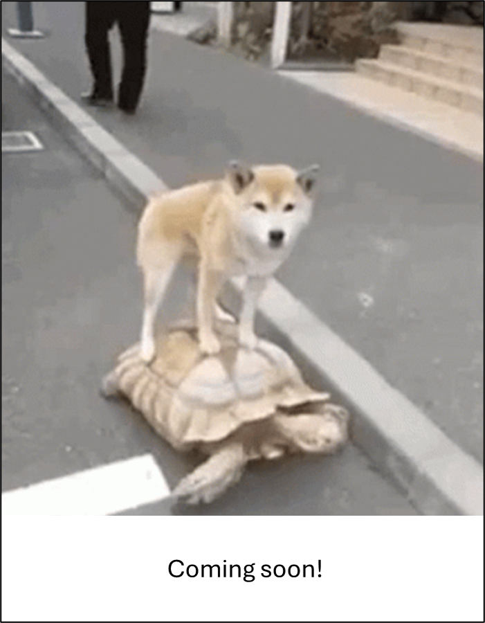
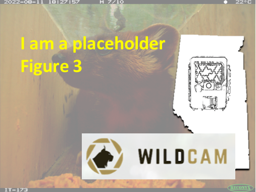

Repeat sampling#
Hint
This page has not yet been populated with information. This information will be available soon! In the meantime, check out the information in other info topics (Concept library TOC).
This section will be available soon! In the meantime, check out the information in the other tabs!
{kind=link}


figure1_caption
figure2_caption

figure3_caption

figure4_caption
figure5_caption
figure6_caption
vid1_caption
vid2_caption
vid3_caption
vid4_caption
vid5_caption
vid6_caption
Type |
Name |
Note |
URL |
Reference |
|---|---|---|---|---|
resource1_type |
resource1_name |
resource1_note |
resource1_url |
rbib_resource1_ref_id |
resource2_type |
resource2_name |
resource2_note |
resource2_url |
rbib_resource2_ref_id |
resource3_type |
resource3_name |
resource3_note |
resource3_url |
rbib_resource3_ref_id |
resource4_type |
resource4_name |
resource4_note |
resource4_url |
rbib_resource4_ref_id |
resource5_type |
resource5_name |
resource5_note |
resource5_url |
rbib_resource5_ref_id |
resource6_type |
resource6_name |
resource6_note |
resource6_url |
rbib_resource6_ref_id |
resource7_type |
resource7_name |
resource7_note |
resource7_url |
rbib_resource7_ref_id |
resource8_type |
resource8_name |
resource8_note |
resource8_url |
rbib_resource8_ref_id |
resource9_type |
resource9_name |
resource9_note |
resource9_url |
rbib_resource9_ref_id |
resource10_type |
resource10_name |
resource10_note |
resource10_url |
rbib_resource10_ref_id |
resource11_type |
resource11_name |
resource11_note |
resource11_url |
rbib_resource11_ref_id |
resource12_type |
resource12_name |
resource12_note |
resource12_url |
rbib_resource12_ref_id |
resource13_type |
resource13_name |
resource13_note |
resource13_url |
rbib_resource13_ref_id |
resource14_type |
resource14_name |
resource14_note |
resource14_url |
rbib_resource14_ref_id |
resource15_type |
resource15_name |
resource15_note |
resource15_url |
rbib_resource15_ref_id |
resource16_type |
resource16_name |
resource16_note |
resource16_url |
rbib_resource16_ref_id |
resource17_type |
resource17_name |
resource17_note |
resource17_url |
rbib_resource17_ref_id |
resource18_type |
resource18_name |
resource18_note |
resource18_url |
rbib_resource18_ref_id |
resource19_type |
resource19_name |
resource19_note |
resource19_url |
rbib_resource19_ref_id |
resource20_type |
resource20_name |
resource20_note |
resource20_url |
rbib_resource20_ref_id |